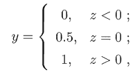
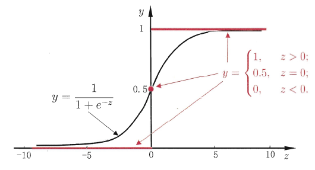

Generalized Linear Model
在前篇文章中 提到線性回歸模型可寫為 :
$$ y = w^Tx $$
這個線性模型是直接預測逼近y的結果，有沒有辦法令預測值是y的衍生呢? 例如假設預測值是在指數尺度上做變化:
$$ ln(y) = w^Tx $$
也就是 :
$$ y = exp(w^Tx) $$
廣義來說，考慮一個可微分的函數 $g()$，令
$$ y = g(w^Tx) $$
則這樣一個模型就稱為廣義線性模型(generalized linear model)。
Logistic Regression
了解甚麼是廣義線性模型之後，線性回歸模型是直接去逼近我們想預測的 y 值來解決regression問題，那如果我們想解決的問題是分類問題怎麼辦?
先考慮最基本的 binary classification問題，假設label只有 1、0 兩種值(對應正/反)，也就是屬於和不屬於的差別，相較於線性回歸中直接預測值，這裡想要預測的是屬於這兩種種類的”機率”。
在線性回歸模型中輸出的是一個實數值 $z (z = w^Tx)$ ，顯然不適合拿來做分類(也可以說因為這邊的 $z$ 的取值範圍在負無限大到無限大，而我們想要的是屬於正/反類別的機率)，因此，我們要做的事將這個實數值 $z$ 轉成 0/1 的值，最理想的是使用一個 unit step function:

當預測出的值大於0則 y=1，若小於0則 y=0，但 unit step function 是不連續的函數(如下圖紅線所示)，沒辦法作為廣義線性模型的 $g()$，因此我們希望能用另一個函數來逼近 unit step function 達到非常相近的效果，而這個函數就是 logistic function (或稱sigmoid function):
$$ y = \frac{1}{1+e^{-z}} = \frac{1}{1+e^{w^Tx+b}} $$
通過sigmoid function，我們能把輸出值限制在0~1之間，再藉由以0.5當作分界值，來判斷分類是屬於0還是1，這種方法就稱為 logistic regression (雖然名字中有regression，但實際上解決的是分類問題)。

Logistic
logistic function:
$$ y = \frac{1}{1+e^{-z}} = \frac{1}{1+e^{w^Tx+b}} $$
這個式子可以改寫為:
$$ ln\frac{y}{1-y} = w^Tx + b $$
在統計學中，odds指的是事件發生的機率與事件不發生的機率之比，而在這邊因為只有正/反兩種選擇，因此假設 y 為此資料點 x 被分為正例的可能性，則 1-y 就是分為反例的可能性，而 $\frac{1}{1-y}$ 就是這種情況下的odds。
由上述式子可看出，logistic regression其實就是用線性回歸模型的預測方式，只是他所逼近預測的是資料的 “log odds”(也可稱為logit、logistic)。